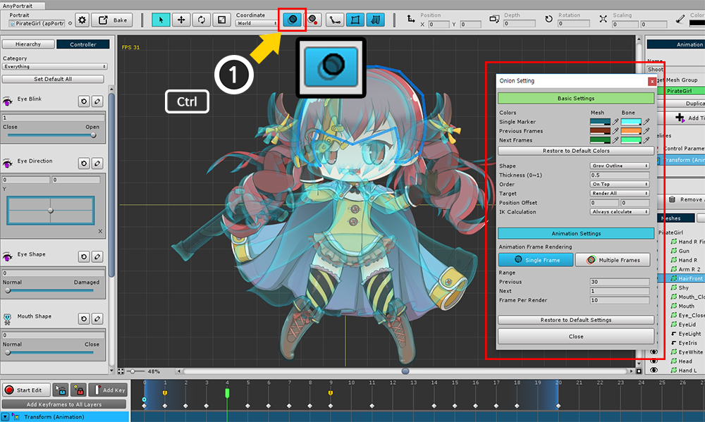

AnyPortrait > マニュアル > 残像(Onion Skin)
残像(Onion Skin)
1.0.4
アニメーションを作成するときに、各フレームを重ねておけば、アニメーションの残像のように感じられることがあります。
この残像効果を「Onion Skin」効果と呼ばれます。
(この名前は薄い紙の上に重ねた図から来ました。)
「Onion Skin」(残像)を使用すると、アニメーションの複数のフレームを比較したり、他の状態と比較することができます。
このページでは、「Onion Skin」機能の使い方について説明します。

「制御パラメータ」でモディファイアを作成する場合は、「Onion Skin」を使用できます。
(1) 制御パラメータの値を 「Onion Skin」として登録するように設定します。
(2) ボタン( O )を押して「オニオンスキン」を表示させ、(3) 「Onion Skin登録」ボタンを押します。
その後、現在の状態が 「Onion Skin」として登録されます。

制御パラメータを移動すると、それを登録パラメータと比較できます。
モディファイアは 「Onion Skin」をオンにして編集できます。
(注 : この状態で 「Onion Skin」が表示されない場合、登録された 「Onion Skin」は保持されます。)

また、アニメーションを作成するときに「オニオンスキン」を使用することもできます。
(2) 「Onion Skin」をオンにして登録します。

別のフレームに移動すると、「Onion Skin」を見ながら作業することができます。
「Onion Skin」で登録されたフレームには、薄青色のアイコンが表示されます。
高度な設定とアニメーション 「Onion Skin」

Ctrl を押しながら 「Onion Skin」ボタンを押すと、設定ダイアログボックスが表示されます。
このダイアログでは、 「Onion Skin」の設定を変更できます。
(Mac OSXでは、 Commandキー を押します。)
1. 色の設定
: 「Onion Skin」の色を設定します。 メッシュとボーンの単一または複数のフレームにそれぞれ色を指定できます。 「Restore to Default Colors」ボタンを押すと、色の値を復元できます。
2. レンダリング方法
- Shape : 描画されるシェイプ アウトラインを描画するには「Glow Outline」を選択し、通常のメッシュレンダラーのようにするには「Solid」を選択します。
- Thickness : 「Glow Outline」メソッドでレンダリングするときのアウトラインの太さの比率を設定します。
3. レンダーオーダーとターゲット
- Order : 「Onion Skin」を前に、または後にレンダリングするかを決定します。
- Target : すべてのオブジェクトをレンダリングするか、選択したオブジェクトのみをレンダリングするかを決定します。
4. Position Offset : 指定された値だけ移動してレンダリングします。
5. IK Calculation
: 編集モードでは、IK計算が停止します。 「Onion Skin」のレンダリング時にIKを計算した結果を表示するかどうかを選択できます。
6. Single frame / Multiple frames
: アニメーションを編集する場合、1つまたは複数のフレームでレンダリングすることができます。
7. レンダリングするフレームの範囲と間隔
: 前後のフレーム範囲を設定し、レンダリングするフレーム数を設定します。
8. Restore to Default Settings

「Onion Skin」の色を変更することができます。

図形を「Glow Outline」で「Solid」に変更すると、満たされてレンダリングされます。

「Shape」が「Glow Outline」の場合、「Thickness」の値を小さくすると、上記のような細い線が描画されます。

「Order」値を「On Behind」に変更すると、「Onion Skin」が後にレンダリングされます。

「Target」を「Selected Only」に変更すると、現在選択したオブジェクトのみをレンダリングされます。
メッシュと骨の両方を使用することができます。

「Position Offset」の値を変更すると、「Onion Skin」の位置が移動します。
「Multiple Frames」ボタンを押すと、複数のフレームの「Onion Skin」を表示できます。
この関数は、アニメーションを編集するときに機能し、タイムラインUIでレンダリングされる範囲は、画面の下部にアイコンで示されます。

「Frame Per Render」とは、「Onion Skin」が1回レンダーするフレーム数を意味します。
最小値は1で、値が小さいほどレンダリング時間が長くなります。
この場合、エディタは遅くなることがあります。

マルチフレームレンダリング状態で「Position Offset」を設定すると、各「Onion Skin」の位置が「Offset」だけ移動します。
連続動作を確認するのに便利です。